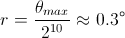
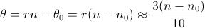

Capteurs de position
Pour pouvoir contrôler le moteur via le pont en H afin d'incliner le support de la fusée comme spécifié par l'utilisateur, le microcontrôleur doit connaitre à chaque instant la position de la plaque pour la comparer avec la valeur désirée.
Capteurs
| Capteur | Caractéristiques | Rôle | Connexion |
| Potentiomètre | 0 -> 8.5 kΩ | Fournir une grandeur analogique variant avec l'angle | Entrée AN0 (A0) du PIC |
| Bouton RAZ | NO, enfoncé par la plaque en position horizontale | Indiquer au PIC que le position critique est atteinte, et réglage de la valeur de référence du potentiomètre | Entrée A2 du PIC |
Câblage
Programmation / PIC
Le curseur du potentiomètre est relié au PIC sur l'entrée AN0 qui dispose d'un CAN (ou "ADC") à 10 bits. Sachant que l'angle de rotation du potentiomètre est θmax = 300°, la résolution du convertisseur est  (ce qui est largement suffisant dans notre cas).
Lorsque le bouton RAZ est enclenché (c'est à dire lorsque la plaque est en position horizontale), le microcontrôleur "fait le tarage" en calculant la valeur de référence du potentiomètre n0 (entier codé sur 10 bits) correspondant à l'angle θ0 = r.n0. Dès lors, à chaque instant, l'angle tourné θ est :
 (les calculs se faisant avec des entiers, et n0 <= n < 1024)
Cette valeur de θ peut être comparée à celle renseignée par l'utilisateur via le keypad. Lorsque l'écart entre θ et cette valeur est suffisamment faible, le moteur est arrêté.
Capteurs en fonctionnement
Sur les deux vidéos suivantes, des ohmètres ont été branchés aux bornes du bouton RAZ (multimètre bleu, à gauche) et aux bornes du potentiomètre (multimètre jaune, à droite). Lorsque la plaque est horizontale, la résistance aux bornes du bouton RAZ est nulle, puis devient infinie lorsque la plaque remonte. On peut voir la résistance du potentiomètre au niveau du curseur varier au cours de la montée ou de la descente de la plaque. (Sur ces vidéos, le moteur est commandé semi-manuellement grâce au PIC).
Descente de la plaque :
(Si la vidéo ne fonctionne pas, vous pouvez la lire sur ce lien : moteur/videos/capteurs_inclinaison_descente.wmv)
Réglage automatique de l'inclinaison
Sur la vidéo suivante, nous avons programmé le microcontrôleur pour remettre la plaque en position horizontale puis l'incliner de 30° (de façon tout à fait automatique). L'essai est très concluant ! (Le papier bleu en arrière plan indique l'angle de 30°).
NB : Les leds indiquent la valeur numérique après conversion donnée par le potentiomètre, sur 8 bits.
Réglage automatique et arrêt d'urgence
Nous avons lancé la même procédure que sur la vidéo précédente (descente + remontée à 30°). Nous l'avons interrompue en actionnant le bouton d'arrêt d'urgence.